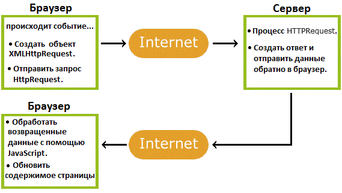

Что такое HTTP?
Курс по основам HTML/CSS. W3Schools на русском. Уроки для начинающих

HTTP расшифровывается как Hyper Text Transfer Protocol (Протокол передачи гипертекста)
WWW это связь между web клиентами и серверами
Связь между клиентскими компьютерами и веб-серверами осуществляется путем отправки HTTP запросов и получения HTTP ответов
World Wide Web комуникация
Всемирная паутина (World Wide Web) - это общение между web клиентами и web серверами.
Клиентами часто являются браузеры (Chrome, Edge, Safari), но также это могут быть программы и устройства любого типа.
Серверы - это чаще всего мощные компьютеры в облаке (компьютерная сеть).
Веб-клиент
Облако
Веб-сервер
HTTP Запрос / Ответ
Связь между клиентами и серверами осуществляется с помощью запросов и ответов:
- Клиент (браузер) отправляет HTTP запрос в Интернет
- Веб-сервер получает запрос
- Сервер запускает приложение для обработки запроса
- Сервер возвращает HTTP ответ (вывод) в браузер
- Клиент (браузер) получает ответ
Круг HTTP-запросов
Типичный круг HTTP-запросов/ответов:
- Браузер запрашивает страницу HTML. Сервер возвращает файл HTML.
- Браузер запрашивает таблицу стилей. Сервер возвращает файл CSS.
- Браузер запрашивает изображение в формате JPG. Сервер возвращает файл JPG.
- Браузер запрашивает код JavaScript. Сервер возвращает файл JS
- Браузер запрашивает данные. Сервер возвращает данные (в формате XML или JSON).
XHR - XML Http запрос
Все браузеры имеют встроенный XMLHttpRequest объект (XHR).
XHR - это объект JavaScript, который используется для передачи данных между веб-браузером и веб-сервером.
XHR часто используется для запроса и получения данных с целью изменения веб-страницы.
Несмотря на XML и Http в названии, XHR используется с протоколами, отличными от HTTP, и данные могут быть разных типов, таких как HTML, CSS, XML, JSON и простой текст.
XHR объект - это Мечта веб-разработчиков, потому что вы можете:
- Обновление веб-страницы без перезагрузки страницы
- Запрос данных с сервера - после загрузки страницы
- Получать данные с сервера - после загрузки страницы
- Отправка данных на сервер - в фоновом режиме
Объект XHR является базовой концепцией AJAX и JSON:
